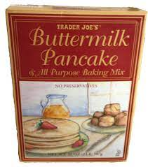

Pancakes

Recipe description:
This is a recipe from a Trader Joe's pancake mix. Pretty straightforward
Ingredients:
- 1 3/4 Cups Trader Joe’s Buttermilk Pancake Mix
- 1 Cup Water
- 1 Egg
Steps:
- Combine ingredients into bowl and stir
- Place desired portion of batter onto heated pan/grittle
- Serve and enjoy!